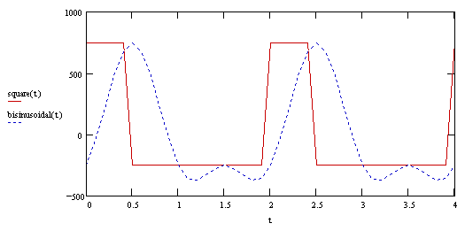
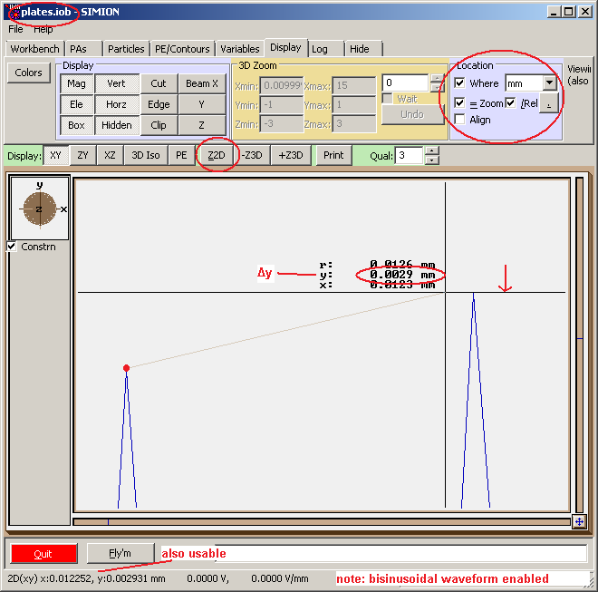
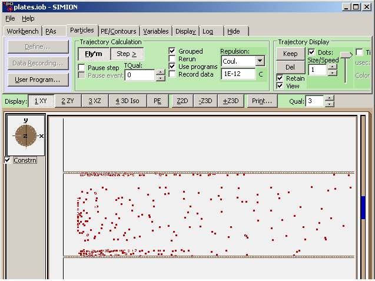
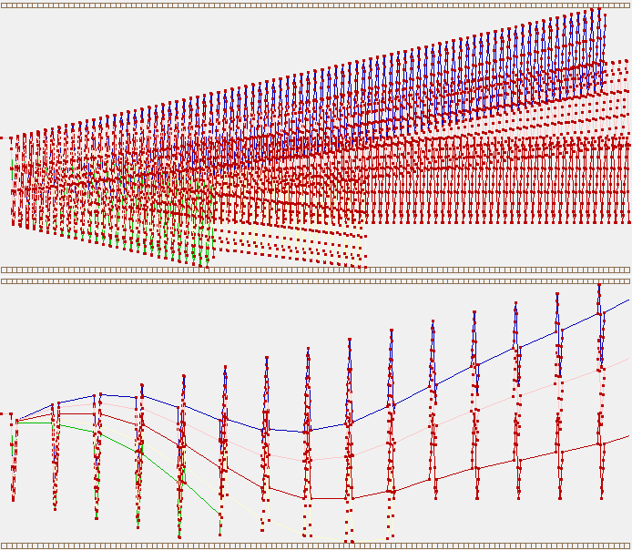
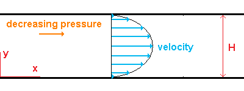
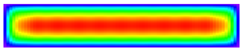
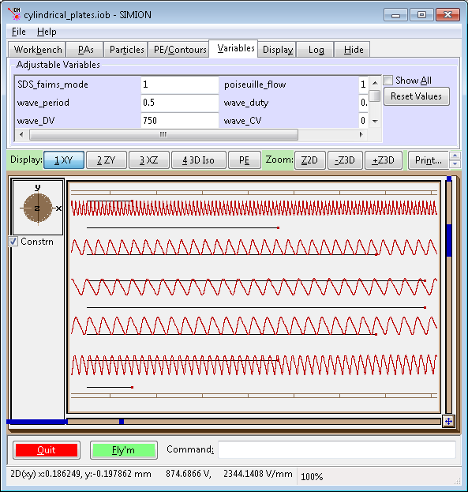
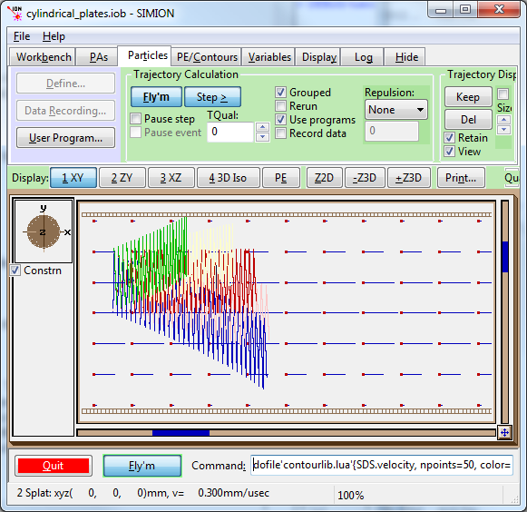
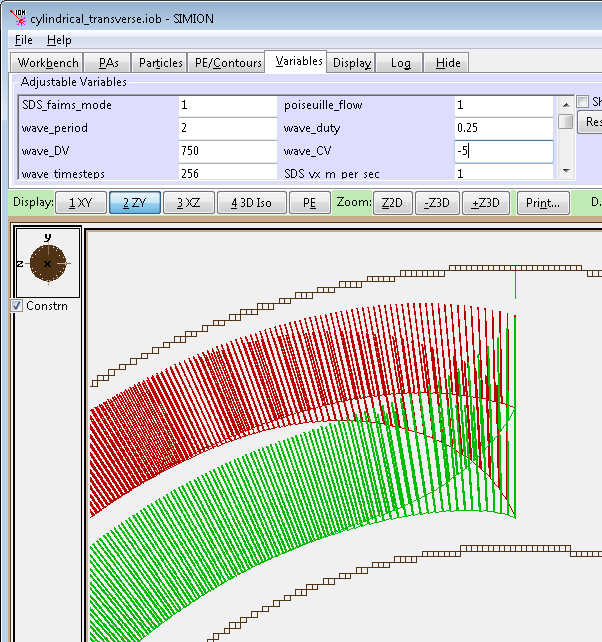

Purpose
These examples demonstrate a High-Field Asymmetric Waveform Ion Mobility Spectrometry (FAIMS) [1] device.
Note: these are more advanced examples. The mobility, diffusion, and RF electrode voltages are controlled by Lua user programs.
Files in this demo:
- README.html - Description of example
- plates.iob - Idealized planar FAIMS system.
- cylindrical_plates.iob - Idealized cylindrical FAIMS system, with gas flow in axial direction
- cylindrical_transverse.iob - Idealized cylindrical FAIMS system, with gas flow around axis.
- spectrum.iob - Acquires a FAIMS spectrum in planar FAIMS.
- collision_sds.lua - SDS collision model (models mobility). Customized to support FAIMS.
- mbmr.dat, m_defs.dat - used by SDS model (see SDS example for details)
- various waveforms:
- squarewavelib.lua - models square waveform
- squarelinewavelib.lua - models square waveform, using waveformlib.lua (simpler than squarewavelib.lua)
- bisinusoidalwavelib.lua - models bisinusoidal waveform
- bisinusoidallinewavelib.lua - models bisinusoidal waveform approximated as line segments. This is similar to bisinusoidalwavelib.lua but examines effects of digitization, using waveformlib.lua.
- sinusoidalwavelib.lua - models sinusoidal waveform (i.e. a symmetric waveform)
- experimentallinewavelib.lua - experimentally measured waveform, using waveformlib.lua.
- waveformlib.lua - general waveform definition library (used by some of the above)
- contourlib81.lua - utility library for plotting gas flow
- y_range.fly2 - particles starting with arithmetic sequence of y positions. (useful for looking at behavior under parabolic flow).
- cylindrical_transverse_focus.fly2 - used for illustrating focusing in cylindrical_transverse.iob
Usage
How to run demo:
- 1. View plates.iob. (Click View on main screen and select the plates.iob file.)
- 2. If this is your first time using the example, you will be asked to refine (confirm that and press Refine).
- 3. Note that SDS defaults the trajectory quality (T.Qual on the Partices tab) to 0, which is recommended for SDS. Note: The FAIMS code controls the time-steps itself, forcing ion_time_step to be a fraction of the RF period (wave_period/wave_timesteps).
- 4. Fly ions. (Click Fly'm.) Note that the red ions travel approximately parallel. These have zero alpha and beta FAIMS constants (mobility is field independent).
FIX:TODO-describe other examples.
Additional Notes
Extensions Made to the SDS Collision Model
The interaction of the ions with the background gas is simulated here using a modified version of the SDS collision model [3]. The model was extended to support field-dependent mobility constants (see Field-dependent Mobility below). It also supports some optional optimizations to allow the simulation to run faster such as allowing the ion velocity to be defined directly according to the mobility equation (see SDS FAIMS Mode below) and to allow more efficient handling of large numbers of RF cycles (see Quick RF Cycles Feature below). The model is evaluated in our paper [14].
Field-dependent Mobility (alpha and beta values)
The original SDS model was modified to support mobility constants (K) that depend on field (E):
K = K0 * (1 + α(E/N)2 + β(E/N)4)
N is the number density of gas particles.
The constants α and β are specified in the m_defs.dat file as additional columns.
The mobility equation is normally stated as vt=KE, where E is the electric field. E is equivalently thought of as a force (F=q E) or acceleration (a = F/m). Though we usually assume that the forces/accelerations are due to electric fields, we might generalize this to any force, including magnetic fields and gravity, for example. It is convenient to input the ion's total acceleration into the mobility equation (i.e. ion_a[xyz]_mm variables) rather than the electric field (-ion_dvolts[xyz]_mm variables). This is particularly the case since the ion_dvolts[xyz]_mm variables only contain the electric field due to the potentials arrays and neglect any electric fields due to charge repulsion. By using the ion_a[xyz]_mm variables, we correctly handle charge repulsion and as a side-effect possibly correctly handle the general cases of other forces as well. WARNING: the acceleration vector used here is non-relativistic.
Disabling Diffusion (SDS_diffusion = 0)
The diffusion effect causes ions to diffuse in random directions away from their ideal trajectory defined by the mobility equation. Normally, you want diffusion effects enabled (SDS_diffusion = 1) because it is more realistic. Diffusion effects typically require flying a sufficiently large number of SIMION ions (e.g. a hundred) that is statistically representative of all real ions in your system (possibly millions).
Sometimes it is helpful to disable diffusion effects (SDS_diffusion = 0) and fly only a single ion. This allows you to clearly and quickly see the average behavior of the ions, ignoring deviations from the average behavior as due to diffusion.
Setting Time Step Size (wave_timesteps)
The time-step size for trajectory integration must be a sufficiently low fraction of the RF period. If this is not done, the ions will not accurately experience the fields over the RF cycle, which are critical in FAIMS. For example, if the RF period (wave_period) is 2 microseconds, a time-step size of 0.02 microseconds (i.e. 100 time-steps per RF period) might be good.
SIMION's time step size is normally controlled via the trajectory quality (TQual) parameter, which is normally set to a low value such as 0 or 3. A value of 0 (recommended for SDS) causes ions to advance approximately one grid unit per time step, whereas a positive value like 3 also enables variable, self-adjusting time-steps for improved accuracy (smaller time-steps) near field changes and boundaries.
The TQual parameter does not easily guarantee the condition above (small fraction of the RF period). Therefore, it is more convenient to set the time-step size directly the user program. The waveform libraries (squarewavelib.lua and bisinusoidalwavelib.lua) both include a variable wave_period that sets the RF period and a variable wave_timesteps that sets the number of time-steps per RF period.
To set wave_timesteps appropriately, it's recommend that you temporarily disable diffusion effects (see above), allowing the RF behavior to be seen more clearly, and gradually reduce wave_timesteps until trajectories converge. If wave_timesteps is too small, trajectories will be inaccurate. If it is too large, trajectories will take needlessly long to calculate. wave_times steps generally has to be larger if fields change continuously over the RF period, such as due to a continuous RF waveform (e.g. sinusoidal) or ions experiencing fringe fields. wave_timesteps may be set very small (e.g. 4) if the fields are uniform and the RF is a rectangular wave (note: squarewavelib.lua forces wave_timesteps to be 4 if it is set to a smaller value).
In the case of abrupt field transitions such as in a rectangular wave, it is recommended to create a very small time-step that covers both sides of the voltage transition. squarewavelib.lua does it automatically with at least four time steps: at least one time-step for the high field region, at least one time-step for the low field region, and one very small time step each for the two transition regions between the low and high fields.
Waveforms
Different types of waveforms can be applied to the FAIMS plates. There is a square wave (implemented via squarewavelib.lua), which is theoretically simple to understand but not always convenient to generate in practice. A simpler approximation is a bisinusoidal wave [2] (implemented via bisinusoidallib.lua) formed by the superposition of two sinusoidal waveforms. You can easily change the plates.iob example to use a bisinusoidal wave rather than a square wave by editing plates.lua to import only the latter.

The bisinusoidal has the equation [2] of V_D(t) = [f sin wt + sin(hwt - φ)] V_max / (f + 1), where V_max is the dispersion voltage, h=2, φ=π/2, and f = 2 (usually), 3, or 4.
Theoretical Calculations Checks
The Δy change in ion position per RF cycle can be calculated theoretically (here) in an idealized uniform field (given by the plates.iob example) with diffusion effects disabled. The theoretical results are given below and agree with the SIMION results in plates.iob (found by 2D zooming in on the two subsequent trajectory edges and measuring the y displacement between them with the mouse as shown in the picture below.)
mass Delta(y) per RF cycle (mm) Delta(y) per RF cycle (mm)
(square wave) (bisinusoidal wave)
----- ----------------------- -------------------------
100 0 0
101 -5.86E-3 -2.93E-3
102 5.86E-3 2.93E-3
103 -3.63E-3 -1.67E-3
104 3.63E-3 1.67E-3

SDS FAIMS Mode
The mobility equation, vt = K E, defines an ion's terminal velocity (vt) as a function of the field (E) at the ion's position. If an ion is always at terminal velocity, we can simply set the ion velocity to vt at every time step. However, if the field changes, such as if the ion moves through a field gradient or the field is time-dependent (e.g. RF waveform as in FAIMS), then there will be a short time period in which the ion will accelerate/decelerate to the new terminal velocity. An order-of-magnitude estimate of this time is given by the relaxation time, trx (or, equivalently, distance λ) [8]:
trx = 2mK/q, λ = (m/q)EK2
trx represents an estimate of the time required for the ion to accelerate from zero velocity to terminal velocity. It is derived as the quotient of the terminal velocity, vt=KE, and the estimated average acceleration, (1/2)qE/m.
Of critical importance in FAIMS is how trx compares to the period in which the field changes significantly--that is one RF period or one time step in an RF period. In many typical FAIMS conditions, such as small to mid-sized ions in N2 or O2, trx is on the order of 0.1-1 ns, while it reaches ~13 ns for a certain large ion in a highly mobile medium (apomyoglobin protein ion in He) [9]. This is a small percentage of a typical FAIMS RF period of 1 microsecond or so (1 MHz), though it might not be entirely negligible.
The modified SDS model supports two modes. The FAIMS mode (SDS_faims_mode = 1), forces ion velocity to be defined according to the mobility equation at every time step. The normal mode (SDS_faims_mode = 0), attenuates ion acceleration according to a Stokes' law with drag coefficient tuned to give terminal velocity consistent with the mobility equation. The normal mode is more general and can model ion movement even over the relaxation processes. The downside is that the normal mode must accurately model the relaxation process. This involves using a sufficient number of trajectory integration time steps over the relaxation period to accurately model the relaxation process. Since this period can be very small in FAIMS (trx << RF period), the time-steps can be very small too, which implies lots of time-steps and long integration run times. SIMION's variable-sized, self-adjusting time steps (preferably TQual ≥ 3, the default), corrects for this somewhat, especially in making the time-steps near sharp field transitions (e.g. rectangular wave edges) very small. In FAIMS, it's usually sufficient and more efficient to use the FAIMS mode.
Space Charge, Magnetic Fields, and Other Accelerations
The mobility equation, K = v/E * ..., requires an electric field (E = - grad V) as input. We could input the electric field computed from the SIMION potential arrays (i.e. -ion_dvolts[xyz]_mm variables), but this may ignore some other types of acceleration. These variables do not include electric fields from the charge repulsion effect. (They do if the Poisson solver is used because there the effect of space-charge is incorporated directly into the potentials of the refined potential array.) These variables also ignore forces from magnetic fields and any other force you might add (e.g. gravity). Now, we do have a total non-relativistic acceleration (ion_a[xyz]_mm variables) accessible inside the accel_adjust segment segment, which incorporates all these forces. (Note "Trick 1" mentioned under "The accel_adjust Program Segment" in Section "L.2.6 Program Segments, Details" of the SIMION 8.0 manual and also the flow chart in issue 304). The SDS-FAIMS model re-expresses this total acceleration (a) in terms of an equivalent potential gradient (grad V) using the Lorentz force law: m*a = F = q * -grad V. Note that "a" (i.e. ion_a[xyz]_mm variables) actually incorporates all acceleration forces (charge repulsion, electric field and magnetic field), not just electric field (-ion_dvolts[xyz]_mm) forces. This potential gradient vector is then fed into the mobility equation.
Note that if SDS_faims_mode == 1, the accel_adjust segment forces the acceleration vector to be zero (ion_a[xyz]_mm = 0) and the other_actions segment forces the velocity to be the terminal velocity (ion_vx_mm, ion_vy_mm, and ion_vz_mm) defined by the mobility equation. If SDS_faims_mode == 0, then the accel_adjust segment attenuates the SIMION computed acceleration to apply a Stokes' law drag equivalent to the mobility constant. In both cases, the "total" acceleration (charge repulsion + electric field + magnetic field) is utilized in the mobility equation.
There are two ways to handle space-charge in SIMION: the charge-repulsion feature (which superimposes an additional "repulsion" acceleration on particle trajectory integration) and the Poisson solving feature (which is more general and causes the field calculation to take space-charge into account). For the time being, the first approach is much more practical. Normally, you would use the equivalent Coulombic or factor forms of the charge repulsion, not beam repulsion here. Note that the Poisson solver currently does not support fast adjust (.PA#) potential arrays. You can use a basic potential array (.PA), and programmatically re-refine many times over the RF cycle, though this can be very computationally intensive. This is a possible area for future improvement tough.
As an example of using repulsion effects, load plates.iob, load the repulsion2.fly2 particle definitions (which defines 500 ions with random Y and Z positions and random time of birth (TOB) in the X direction. Optionally set the adjustable variable SDS_diffusion = 1 to enable diffusion (which reduces Coulombic repulsion), set the wave_timesteps variable to 20, in the Particles tab, set TQual to 0, enable Grouped flying, set Repulsion to Coulombic with a huge repulsion amount like 1E-12 C (i.e. 1E-12 C per 300 μsec TOB range = 3.3 nA), and enable "Dots" trajectory display using maximum dot speed (nearby slider control moved to top). Fly ions. Note that excess charge tends to hit the electrodes early on near the front of the FAIMS cell, thereby thinning out the space-charge further down in the FAIMS cell and reducing the charge repulsion further down. This is shown in the figure below. Now reduce repulsion to a more realistic value like 1E-15C (i.e. 3.3 pA), or turn it off entirely, and fly again. Note that the repulsion is now minimal compared to the diffusion effect. Particles don't hit electrodes until further down in the FAIMS cells, where some ions have enough time to reach the electrodes due to diffusion. The effects of charge repulsion and diffusion have some similarities. Both tend to push ions further apart. However, they are not exactly the same either; by Coulomb's law, the repulsion effect is much greater when ions are close together.

Quick RF Cycles Feature (SDS_quick_cycles not 0)
The following "quick RF cycles" feature is an advanced option that can greatly speed the simulation if ions experience a large number of RF cycles over a short net distance traveled. It is safest to keep this option disabled (SDS_quick_cycles = 0) unless you fully understand the implications.
Motivation: The path that a particle takes over an RF cycle may be nearly identical to the path of the particle over a series of subsequent RF cycles, except for there being a small spatial displacement between cycles. Therefore, rather than tracing the particle movement over N cycles we might be able to instead trace the particle over one full cycle, measure its displacement over that cycle and then extrapolate that displacement to instantly calculate the path of the particle over the N-1 subsequent cycles. This can improve the calculation speed by huge a factor of nearly N-1. The success of this approach depends on the environment seen by the particles (e.g. the electric and flow fields) remaining nearly identical between subsequent RF cycles. This could occur if (1) the RF cycle waveforms are identical and (2) the net displacement of the particle over each RF cycle is small, perhaps a grid unit for N cycles, or there is some type of symmetry along the particle path (e.g. 2D planar symmetry). The value N-1 is controlled via the SDS_quick_cycles adjustable variable.
Extrapolation: To extrapolate the net displacement (Δx) from one RF cycle to N number of RF cycles, we could do a simple linear extrapolation (N Δx). One possible downside, such as may occur under non-uniform fields, is that the net movement of the particle might not be a straight line, so accuracy will suffer as N is increased in the extrapolation. One improvement is to trace not one but two RF cycles prior to each extrapolation. The two cycles provide some measure of the curvature of the path of net movement and thereby allow a more precise (higher-order) extrapolation for a given value of N. The number of normal cycles traced (1 or 2) is controlled via the SDS_quick_normal_cycles adjustable variable.
Handling Diffusion: Now, the diffusion effect observed by a single ion over multiple RF cycles is not identical in each of the cycles. In one cycle, the ion might be propelled forward by diffusion; in the next cycle it might be propelled backward. Diffusion is a random walk, where each step in the way is randomized and independent. The diffusion effect over N cycles is, on average, only sqrt(N) times that over a single cycle (see "random walk"), not N times as would occur in the extrapolation above. Therefore, we have two possible solutions. We could reduce the diffusion effect in the first cycle by a factor of 1/sqrt(N), in which case multiplying it by N gives the desired sqrt(N). Alternately, we may disable diffusion effects in the first cycle, extrapolate the displacement by a factor of N, and only then separately add the diffusion for N total cycles.
The adjustable variable "SDS_quick_cycles" is the number of extrapolated RF cycles. SDS_quick_cycles is a non-negative integer. Setting it to 0 effectively disables the feature, and all ions are traced normally. Setting it to -1 takes special meaning, in which case the program chooses a value automatically so that the mobility displacement (ignoring diffusion) is approximately one grid unit over all RF cycles in the group. This conservatively assumes that the environment over a grid unit doesn't change much. The adjustable variable "SDS_quick_period" must be set to the period of one RF cycle in microseconds. This variable may be set automatically by your program (the squarewavelib.lua and bisinusoidalwavelib.lua routines do this for you automatically)
Do not set the SDS_quick_cycles value so high that the particle travels such a distance that different RF cycles would see a non-trivial difference in fields (e.g. when traveling over a region where fields are changing). Also note that increases to SDS_quick_cycles increase the jump distance per time-step of the diffusion effect. This may make the diffusion effect appear very choppy. In fact, it could cause the ion to jump over electrodes. For these reasons, SDS_quick_cycles should usually be kept to a small value, even 0. You may increase it to increase simulation speed if doing so doesn't significantly affect the results.
See collision_sds.lua code for further details on this feature.

Non-uniform Gas Flow
The FAIMS model by default assume an uniform velocity gas flow profile between the FAIMS plates. This is less than realistic and can be changed.
The flow profile in general can be complex and not have a simple analytical form. The flow is in general governed by the Navier-Stokes equation [6], which can be solved numerically by computational fluid dynamics (CFD) programs. Under simplified (idealized) conditions, we can also solve it analytically. A planar FAIMS can be approximated as two infinite parallel plates, which has an analytical solution. A cylindrical FAIMS can be approximated as two infinite concentric cylinders, whose gap locally resembles infinite parallel plates (or we can use the more exact equation in [10].
Laminar flow between infinite plates: For laminar viscous flow between two infinite parallel plates with gap distance H in y direction, constant pressure gradient (dp/dx) in the x direction, and dynamic viscosity μ (i.e. Poiseuille [4] planar flow), the Navier-Stokes equation implies [5] that the flow is in the x direction with velocity of
u(y) = -(1/2)μ-1 (dp/dx) y (H - y)
As seen the velocity has a parabolic profile between the plates, with maximum velocity (umax) at the mid-point (y=H/2) between the plates and zero velocity on the plates. We can relate umax to dp/dx by direct result (setting y=H/2):
umax = -(1/8)μ-1 H2 (dp/dx)

The mean fluid velocity um = (2/3)umax. Multiply this by the cross-sectional area to get the volumetric flow rate.
The above equation holds under laminar (not turbulent) flow regimes. The regime can be described by the Reynolds number,
Re = umD/ν,
where ν = μ/ρ is called the "kinematic viscosity", ρ is fluid density, um is the mean velocity, and D is the diameter (which is the distance between plates in the case of parallel plates). The flow starts becoming turbulent, and the equations start to fail, at (critical) Reynolds numbers above roughly 2000 or so [11].
Note: dynamic viscosity (&mu) of air at 298 K is 1.861E-5 Pa s [7]. density (ρ) of dry air at 0 C, 1 atm is about 1.2929 kg m-3 [12] or, by the ideal gas law, 1.1845 kg m-3 at 298 K. Therefore, for air at 1 atm and 298 K, ν = μ/ρ = 1.571E-5 m2 s-1.In the case of plates.iob, using maximum velocity of 6.667 m/s, Re = 141, which is a laminar condition.
According to [13] (p. 5.3), the hydrodynamic entrance length Lhy is defined as the axial distance required to attain 99% of the ultimate fully developed maximum velocity if the flow entering the plates is uniform. In the case of parallel plates, Lhy/(2D) = 0.011 (2Re) + 0.315/(1 + 0.0175 (2Re)) (p. 5.62). In the plates.iob example (Re = 141), we therefore have Lhy = 6.3 D.
Laminar flow inside a rectangular duct: For a rectangular duct with cross-sectional dimensions 2a and 2b in z and y directions respectively, the laminar flow is as follows [13, p.5.67]:
\[ u = \frac{-16}{\pi^3} \p{\frac{dp}{dx}} \frac{a^2}{\mu} \sum_{n=1,3,...}^{\infty} (-1)^{\frac{n-1}{2}} n^{-3} \p{1 - \frac{\cosh(n \pi y / 2a)}{\cosh(n \pi b / 2a)}} \cos \p{\frac{n \pi z}{2a}} \]
where pressure gradient dp/dx is related to um by
\[ u_m = \frac{-1}{3} \p{\frac{dp}{dx}} \frac{a^2}{\mu} \left[ 1 - \frac{192}{\pi^5} \frac{a}{b} \sum_{n=1,3,...}^{\infty} n^{-5} \tanh \p{\frac{n \pi b}{2 a}} \right] \]
An easier to calculate approximation (for b < a) is
\[ u = u_{max} \pb{1 - \left|\frac{y}{b}\right|^n} \pb{1 - \left|\frac{z}{a}\right|^m} \] \[ u_{max} = {u_m} \p{\frac{m+1}{m}} \p{\frac{n+1}{n}} \] \[ m = 1.7 + 0.5 \alpha^{-1.4} \] \[ n = \begin{cases} 2 & \text{for } \alpha \le 1/3 \\ 2 + 0.3(\alpha - 1/3) & \text{for } \alpha \ge 1/3 \end{cases} \] \[ \alpha = b/a \]Note that the approximation is roughly parabolic y and z directions and that it approaches equality with the infinite plates system as the ratio α approach zero. If the rectangle is very narrow (as it is in plates.iob), we can approximate it with a parallel plates flow model if the ions don't get near the shorter sides.

The Reynold's number is defined using diameter D = 4A/P (for cross sectional area A=4ab and perimeter P=4(a+b).
Reference [13], Chapter 5, contains equations of flow for various types of ducts.
Defining analytical flow in SDS: An analytical flow (e.g. Poiseuille) can be defined in SDS. This is defined by setting the adjustable variable poiseuille_flow = 1 in plates.lua or cylindrical_plates.lua.
To see the effect, load cylindrical_plates.iob, load the "y_range.fly2" particle definitions (particles starting at a range of radial positions, and reduce the wave_period adjustable variable to 0.5 (smaller cycles that are easier to distinguish). The result on a an symmetric 2D zoom are shown below (using a bisinusoidal waveform). Gas velocity (black) are superimposed on the display. Note that particles closer the to center (where gas velocity is higher) move a larger distance per RF cycle.

Plotting Gas Flow
The contourlib81.lua library (from Example: contour) can be used for plotting gas flow. This requires SIMION 8.1.
A number of the examples are already set up to automatically plot gas velocity vectors upon clicking Fly'm. See the plates.lua, cylindrical_plates.lua, and cylindrical_transverse.lua for how to do this. For example, the workbench user program may contain code like this:
function SDS.init()
-- Define velocity in SDS.
function SDS.velocity(x,y,z) return 0,y^2,0 end
-- Plot velocity.
local CON = simion.import '../contour/contourlib81.lua'
CON.plot{func=SDS.velocity, npoints=21, z=0, mark=true}
end
The above code does the plotting inside the SDS.init function, which SDS calls after SDS initializes. Doing so ensures that SDS has already been initialized prior to the plotting. If you define custom gas flows inside the SDS.init function (as the above example does), the plotting must be done after the gas flows are defined. The above code loads the contourlib81.lua library, which is assumed here to be inside a "contour" directory parallel to the current project directory. If you want to copy the contourlib81.lua library into the current project directory, then remove the "../contour/" from the above. The "plot" function draws the plot. The plot uses the velocity function currently used by the SDS model. It plots on the z=0 plane (rather than the default of over the entire 3D workbench volume), using 21 data points per dimension, and with dots (marks) for the vector arrow heads.
It is also possible to do plotting at any time directly from the command bar.
First, with a simulation loaded in the View screen, it is necessary to initialize
SDS model pressures, such as by starting a Fly'm
(or if an SDS.init function is defined
in your user program you might just enter
SDS.init()
into the SIMION bottom command bar).
Then use contourlib81.lua to make gas flow plots. Enter things like
these into the SIMION bottom command bar:
dofile'../contour/contourlib81.lua'(SDS.velocity)
dofile'../contour/contourlib81.lua'(SDS.temperature)
dofile'../contour/contourlib81.lua'{SDS.velocity, npoints=50, color=3, z=0,mark=true, vscale=0.9}
dofile'../contour/contourlib81.lua'(function(x,y,z) return 2*y, x, 0 end)
The plots are cumulative. To clear the plots click the "Del" button on the Particles tab (or restart the Fly'm).
In the above examples, velocity is a vector but temperature is a scalar. The vscale scales the display length of the vectors. For more details and options, see the comments in the contourlib81.lua file.

Cylindrical FAIMS Focusing Effect
One desirable aspect of cylindrical FAIMS is a radial focusing effect due to the interaction of the variable electric field along the cylindrical radius and the α & β values of the ions (ref. faims.com PART 2. Focusing of ions with FAIMS). We can demonstrate this effect in SIMION:
- Load cylindrical_transverse.iob and switch to the ZY view.
- Note that SDS defaults the trajectory quality (T.Qual on the Particles tab) to 0, which is recommended for SDS.
- Load cylindrical_traverse_focus.fly2 (on Particles tab > Define Particles). This defines a series of red ions (type α > 0) and green ions (type β > 0) starting at different radial (y) positions (i.e. initially not radially unfocused).
- Set flow_plot to 0 (on Variables tab) to avoid complicating the graphics with a gas flow plot.
- Set SDS_vx_m_per_sec to 1 (on Variables tab) to lower gas velocity so focusing effect is stronger.
- Set SDS_quick_cycles to 10 (on Variables tab) to increase calculation speed (optional) Optionally flying Grouped can also speed the desired visual.
- Set wave_CV to -5 (on Variables tab) to allow these ions to pass.
- Fly ions. The result is shown below.

Note: if instead of using ions 101 and 103 in the particle definitions we use ions 102 and 104, which have negative α and β respectively, and accordingly set wave_CV around +5, ions will actually defocus rather than focus. Using negative ions (all things the same) will also defocus.
Possible Extensions
- Add some example inputting gas flow calculated by CFD software.
Caveats
Trajectory speed/accuracy: The trajectory integration might not be the most accurate under SDS_faims_mode == 1 and non-uniform electric fields. It has sometimes been found (e.g. cylindrical_plates.iob with gas flow < 1 m/sec) that this requires wave_timesteps on the order of 10000. There is likely room for improvement in the trajectory integration to allow faster calculation (e.g. with fewer time-steps).
Anisotropic diffusion: Presently, the model treats the diffusion isotropically. In practice, diffusion can be anisotropic because it's affected by the electric field. There are separate diffusion coefficients in the longitindal (DL) and transverse (DT) directions of the electric field. The model should be extended to support this. References on this include
- Ref: J. Am. Soc. Mass Spectrom 2005, 16, 349-362. (online)
- Edward Mason, Earl McDaniel. "Chapter 5: Kinetic Theory of Mobility and Diffusion." Transport properties of ions in gases. Wiley 1999. ISBN: 0-471-88385-9, 9780471883852. [link] -- has a good description of diffusion
- See also the included Excel spreadsheet "resources\diffusion_calc.xlsm".
See Also
- [1] www.faims.com - has a short introduction to FAIMS. Particularly see What is FAIMS and How does it work.
- [8] Differential Ion Mobility Spectrometry: Nonlinear Ion Transport and Fundamentals of FAIMS. by Alexandre A. Shvartsburg. CRC Press, 2008. ISBN 1420051067, 9781420051063. link
- [3] Example: SDS collision model - The original SDS model was modified in the FAIMS examples to support field-dependent mobility.
- http://dx.doi.org/10.1063/1.1372186 Roger Guevremont, David A. Barnett, and Randy W. Purves Calculation of ion mobilities from electrospray ionization high-field asymmetric waveform ion mobility spectrometry mass spectrometry J. Chem. Phys. 114, 10270 (2001); DOI:10.1063/1.1372186
- http://dx.doi.org/10.1021/jp711732c D. Papanastasiou, H. Wollnik, G. Rico, F. Tadjimukhamedov, W. Mueller, and G. A. Eiceman Differential Mobility Separation of Ions Using a Rectangular Asymmetric Waveform J. Phys. Chem. A, 112 (16), 3638 -3645, 2008. 10.1021/jp711732c
- [2] http://dx.doi.org/10.1021/ac049299k Alexandre A. Shvartsburg, Keqi Tang, and Richard D. Smith. Understanding and Designing Field Asymmetric Waveform Ion Mobility Spectrometry Separations in Gas Mixtures. Anal. Chem. 2004, 76, 7366-7374.
- http://dx.doi.org/10.1016/j.jasms.2004.09.009 Alexandre A. Shvartsburg, Keqi Tang and Richard D. Smith. Optimization of the design and operation of FAIMS analyzers. Journal of the American Society for Mass Spectrometry Volume 16, Issue 1, January 2005, Pages 2-12.
- http://dx.doi.org/10.1016/j.jasms.2005.04.003 Alexandre A. Shvartsburg, Keqi Tang and Richard D. Smit FAIMS Operation for Realistic Gas Flow Profile and Asymmetric Waveforms Including Electronic Noise and Ripple. Journal of the American Society for Mass Spectrometry Volume 16, Issue 9, September 2005, Pages 1447-1455
- http://ijims.ansci.de/pdf/9/1/Nazarov_IJIMS_9_2006_1_40_44.pdf Erkinjon G. Nazarov, Raanan A. Miller, Stephen L. Coy, Evgeny Krylov, Sergey I. Kryuchkov. Software Simulation of Ion Motion in DC and AC Electric Fields Including Fluid-Flow Effects.
- [4] Wikipedia: Hagen-Poiseuille_Flow. http://en.wikipedia.org/wiki/Hagen-Poiseuille_Flow
- [5] Inviscid incompressible flow By Jeffrey S. Marshall. ISBN 0471375667, 9780471375661 pp 58-59
- [6] Wikipedia: Navier-Stokes http://en.wikipedia.org/wiki/Navier-Stokes
- [7] http://www.lmnoeng.com/Flow/GasViscosity.htm
- [9] Alexandre A. Shvartsburg, Keqi Tang, and Richard D. Smith. Modeling the Resolution and Sensitivity of FAIMS Analyses. (J Am Soc Mass Spectrom 2004, 15, 1487-1498 - background on simulation of FAIMS.
- [10] Alexandre A. Shvartsburg, Keqi Tang and Richard D. Smith. FAIMS Operation for Realistic Gas Flow Profile and Asymmetric Waveforms Including Electronic Noise and Ripple. Journal of the American Society for Mass Spectrometry Volume 16, Issue 9, September 2005, Pages 1447-1455. http://dx.doi.org/10.1016/j.jasms.2005.04.003 -- This is an extension to [9] supporting "realistic gas flow velocity distribution in the analytical gap, axial ion diffusion, and waveform imperfections (e.g., noise and ripple)"
- [11] Ismail Tosun, Deniz Uner, Canan Ozgen. Critical Reynolds Number for Newtonian Flow in Rectangular Ducts Ind. Eng. Chem. Res. 1988,27, 1955-1957 http://www.che.metu.edu.tr/~itosun/data/pdf/CritRe.pdf
- [12] CRC Handbook of Chemistry & Physics. 61st ed. CRC Press, 1980-1981, F-10.
- [13] By Warren M. Rohsenow, James P. Hartnett, Young I. Cho. Handbook of Heat Transfer. McGraw-Hill Professional, 1998. ISBN 0070535558, 9780070535558
- [14] Satendra Prasad, Keqi Tang, David Manura, Dimitris Papanastasiou and Richard D. Smith. Simulation of Ion Motion in FAIMS through Combined Use of SIMION and Modified SDS. Anal. Chem. 2009. http://pubs.acs.org/doi/abs/10.1021/ac900880v
- [15] Zrodnikov Y, Davis CE (2012) "The Highs and Lows of FAIMS: Predictions and Future Trends for High Field Asymmetric Waveform Ion Mobility Spectrometry." J Nanomed Nanotechol 3:e109. link | doi:10.4172/2157-7439.1000e109 - two page intro to FAIMS and applications
Changes
- 2013-02-22: collision_sds.lua .
Diffusion jump vector was not uniformly random. The direction (1,1,1) was about
five times more probable than directions normal to the X, Y, or Z axis.
In practice, this doesn't seem to make much difference in results after a few jumps
due to the central limit theorem, but the new implementation is technically more correct.
See the new
sphere_randfunction. Thanks for Adrian Mariano for pointing this out. The old version was basically this:-- old version < 8.1.1.30, slightly slower & missing repeat/until in original. local function sphere_rand(r) local xp,yp,zp,S -- repeat xp,yp,zp = rand()-0.5, rand()-0.5, rand()-0.5 S = xp*xp + yp*yp + zp*zp -- until S <= 0.25 and S ~= 0 -- rejection method local f = r/sqrt(S) local x,y,z = xp*f,yp*f,zp*f return x,y,z end - 2012-12-01: Eliminate plates_waveform*.iob and spectrum_waveform*.iob examples. plates.iob and spectrum.iob can now do the same thing using squarelinewavelib.lua and experimentallinewavelib.lua. Also add bisinusoidallinewavelib.lua, which is similar to bisinusoidalwavelib.lua but composed of line segments (i.e. digitized waveform) using waveformlib.lua, and results can be checked against bisinusoidalwavelib.lua for accuracy.
- 2012-12-01: collision_sds.lua -
Some refactoring in waveform libraries.
Rename
SDS_quick_periodtowave_periodto simplify waveform libraries. RenameWAVE.set_waveformtoWAVE.set_waveforms. Eliminate old workaround code in spectrum.iob terminate segment. Elminate confusing proto_vhigh/vlow/duty in experimentallinewavelib. Replace excellib with more general plotlib and renameexcel_enabletoplot_enable - 2012-12-01: collision_sds.lua - Utilize
segment.initialize_runto simplify and improve robustness. - 2012-12-01: collision_sds.lua -
T.Qual now automatically defaults to 0 on IOB loading (via
segment.load). - 2012-11-30: collision_sds.lua -
Fix error about
'alpha' (a nil value). Affects since 8.1.1.16. - 2012-09-04: collision_sds.lua - libraries and files loaded by collision_sds.lua can now be searched relative to the directory containing that file. This avoids needing to copy all these files into your project directory.
- 2012-09-04: collision_sds.lua: always guard against negative local pressure and temperature.
- 2012-07-16 spectrum_waveform2.lua - replaced waveform data and changed proto_duty from 0.25 to 0.3 (more accurate)
- 2011-11-30 Using new SIMION 8.1.0.40 segments (e.g. segment.flym) in user programs like spectrum.lua.
- 2011-11-22 X Fix treatment of sign on mobility constants for negative ions when SDS_faims_mode = 1. Behavior is now consistent with SDS_faims_mode = 0. [*mo20111112] Added cylindrical_transverse.iob/lua example, which is similar to cylindrical_plates.iob but gas flow is around rather than along axis. flowlib.lua also extended with define_poiseuille_cylindrical_transverse function. Enable Poiseuille flow via poisseuille_flow adjustable variable (on by default). Added cylindrical focusing discussion to README.
- 2011-11-18 squarewavelib.lua - Improve loss in precision for square waveform. The value for `TOL2` (1e-6), which when multiplied by `2*wave_period` gives the time-step covering the voltage transition, was not low enough when used in combination with certain parameters. This particularly affected use of large values of SDS_quick_cycles (e.g. 100), which multiplies the any error in a single cycle, with Lagrange extrapolation (i.e. SDS_quick_normal_cycles == 2), which being an extrapolation across SDS_quick_cycles cycles compounds the error. The code was slightly rewritten to be simpler and more tightly toleranced (replacing TOL and TOL2 with just a single TOL = 1e-10). The code also now detects loss in numerical accuracy.
- 2011-11-12 collision_sds.lua - Supports storage of gas flows in SIMION PA files (see collision_sds\test3.iob). plates.lua,cylindrical_plates.lua - Incorporates SIMION 8.1 'contourlib81' gas flow plotting (see also collision_sds\test2.iob/lua and test3.iob/lua). collision_sds.lua - disable SDS when pressure is zero (rather than raise error) collision_sds.lua - in reading array text files, avoid problems with Unix-style line endings and NaN values. collision_sds.lua - faster read_file_numbers collsion_sds.lua - extracted out arraylib.lua and textfilelib.lua into separate files.
- 2011-08-26 renamed contourlib.lua to contourlib81.lua.
- 2011-02-25 collision_sds.lua - fixed coordinates for pressure and temperature arrays auto-loaded via load_array. (Issue I576) collision_sds.lua - Some refactoring to reduce differences from standard SDS model. collision_sds.lua - New SDS.pressure_coordinates and SDS.temperature_coordinates variables (from standard SDS model).
- 2011-01-10 - In collsion_sds.lua fixed "ion's x coord outside array" check (Issue I566).
- 2010-12-31 - In sinusoidalwavelib.lua, replaceed sin with cos so that the RF phase is such that particles will be at roughly the center of their trajectories at time t=0.
- 2010-12-17 - Added comments on anisotropic diffusion to README, including new resources/diffusion_calc.xlsm Excel spreadsheet exploring ratio of transverse and longitudinal diffusion coefficients. - In spectrum.lua and related examples allow SPECRUM_CV_step <= 0.
- 2010-12-16 - Fixed collision_sds.lua - When flying particles as Grouped while using a non-uniform gas velocity field and SDS_faims_mode == 1, it was previously applying the velocity field at observed at ions to the wrong ions. - Add contourlib.lua - plotting gas flow fields in SIMION 8.1 - flowfield.lua - set velocity vector to zero outside of flow region (permits better plotting with contourlib.lua) - cleanup collision_sds.lua comments some.
- 2010-12-11 - collision_sds.lua - expanded quick cycles feature to allow non-linear extrapolation of particle trajectory. This can be useful for improving accuracy in non-uniform fields. See the new SDS_quick_normal_cycles variable) Also, the quick cycle feature is now more accurate when wave_timesteps is very large (1000 or more) due to calibration relative to time-step size for a tolerance factor used for RF cycle measurement.
- 2010-12-06 - sinusoidalwavelib.lua - sinusoidal waveform example added, just for comparison.
- 2009-10-16 - README.html - Add repulsion example discussion (including repulsion.fly2). - README.html - Fix equation for Reynold's number. - README.html - Add discussion of flow in rectangular duct.
- 2009-07-08 - Fixed SDS_quick_cycle was broken under reruns (e.g. spectrum.iob). - Fixed squarewavelib.lua tstep_adjust (broken in 2009-07-07) - collision_sds.lua - SDS.temperature, SDS.pressure, and SDS.velocity/_x/_y_/_z, if functions, are now passed x,y,z coordinates in workbench mm units by default. - collision_sds.lua - If function SDS.init is defined by the user, it is called at the beginning of SDS initialization. - Extracted Non-uniform flow code into new flowlib.lua file. - Add excel_enable option to spectrum.lua.
- 2009-07-07 - New SDS_diffusion adjustable variable (replaces SDS_enable == 2 or 3) - Eliminated _G.transition variable (not needed). - Fixed viscosity of air: 1.861E-5 Pa s (not 1.861E-3). - Fixed: field-dependent mobility K was ignored under SDS_faims_mode == 0. - Expanded README sections: Field-dependent Mobility, Disabling Diffusion (SDS_diffusion = 0), Setting Time Step Size (wave_timesteps), SDS FAIMS Mode, Use of Acceleration Forces in the Mobility Equation, Reynolds number.
- 2009-07-02 - Added idealized cylindrical FAIMS (plates_cylindrical.iob). - Added Poiseuille parabolic velocity flow profile option to Lua files.
- 2009-06-27 - fixed charge repulsion and magnetic field handling for SDS_faims_mode == 1. Previously, these accelerations were forced to 0. - print SDS_enable value at beginning of run in collision_sds.lua. - expanded README.html docs on quick RF feature
- 2009-06-26 - added "quick RF cycles" feature to collision_sds.lua. This can speed up the calculation if there are a large number of RF cycles over a short distance traveled. See comments above.
- 2009-06-19 plates.lua - make x_max adjustable and print log message if particles stopped due to x > x_max. Add plates.iob theoretical calculation comparison todocumentation.
- 2009-06-18 - collision_sds.lua - in other_actions, don't bypass diffusion effect when _G.transition enabled. We no longer assume transition time-step size is so small that diffusion is negligible (note: _G.transition may be true for every time step for continuously varying waveforms).
- 2009-06-18 - added bisinusoidal wave (bisinusoidalwavelib.lua). This can be enabled in plates.iob by editing the plates.lua.
- 2011-12-08 collision_sds.lua - fix error in wrap_vector_field when vy or vz but not vx PA is defined.
Source
Author: D.Manura, 2008-2010. Thanks to Satendra Prasad (Thermo Fisher Scientific, San Jose, CA 95134) / PNNL for extensive feedback. Licensed under the terms of SIMION 8.1.